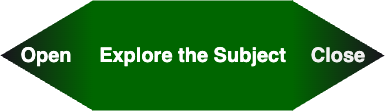
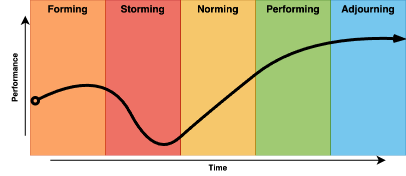
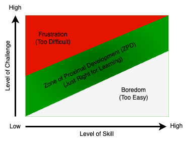

Overview
Facilitation in education refers to the process of helping learners to explore, learn and change. A facilitator is expert on process and group interactions. In education, facilitation is rooted in understanding the nature of the social learning process and how to guide its direction and quality. As a social species, we learn a great deal from each other in both formal and informal contexts. Our earliest learning experiences are profoundly social and intimate interactions between mother and child, and the social aspect of learning never ceases to be important. During this unit, we will examine a short history of social theories of learning from John Dewey and Lev Vygotsky, then, we will experiment with the theory and practices of facilitating learning in group settings.
Topics
This unit is divided into the following topics:
- Social Theories of Learning
- Cooperative Learning
- Facilitating Transformational Learning in Group Settings
- Navigating Group Dynamics
- Core Facilitation Competencies
- Strategies for Learning Facilitation
Learning Outcomes
When you have completed this unit, you should be able to:
- Explain how to design learning environments to maximize learning
- Plan appropriate group learning processes to support transformative learning.
- Demonstrate how to facilitate a course of study.
- Design cooperative activities to maximize student-student and student-content interactions
- Apply knowledge of the Community of Inquiry model and liberating structures to the facilitation of cooperative learning activities
- Identify and explain core competencies for facilitating learning.
Resources
Online resources will be provided in the unit.
2.2 Cooperative Learning
Cooperative learning is a set of learning facilitation strategies that are focused on encouraging educative social interactions between learners. It is important to not conflate cooperative learning with group projects as you might remember them from your previous experiences as a university student. Group projects are often assigned because faculty seem to have a sense that working together is a good thing for students, along with a vague sense that modern jobs all require teamwork. Too often, they amount to repurposing an individual assignment (such as, a research paper) into the same task, but with multiple people handing in one item instead of three to four. When these tasks are not well structured, the process becomes problematic.

We have all likely experienced less-than-ideal group projects where one or two people do most of the work, one member is seemingly absent altogether, and another’s work is of poor quality. This is not the kind of learning activity that inspires highly engaged learners.
Contrary to this dysfunctional group learning model, cooperative learning is structured in a way that maximizes effort from all students and, ideally, leads to all group members attaining high-level learning outcomes. In order to ensure this, there are five characteristics of learning groups that must be present for cooperative learning to occur: “positive interdependence, individual accountability, promotive interactions, appropriate use of social skills, and group processing” (Johnson & Johnson, 2009, p. 366).
More about cooperative learning…
Positive Interdependence
Positive interdependence, according to Johnson and Johnson is the idea that individuals in a learning environment are dependent upon each other for success. In other words, I cannot succeed unless you succeed and you cannot succeed unless I succeed. So, collectively, we are interdependent. Positive interdependence is the key that distinguishes cooperative learning from competitive learning, where students are graded on a curve and only the top 2-3% of students can earn ‘A’ grades.
Individual and Group Accountability
In cooperative learning environments, each individual in the group is held accountable for their contributions to the final product, and feedback is provided to both the individual and the group. This helps to ensure that students who need more assistance are identified and can be supported as needed, and it also prevents the ‘social loafing’ that is common in typical ‘group projects.’
Promotive Interaction
Promotive interaction is the logistics of working and learning together as a cooperative group. The essence is that group members each need to work to promote the learning of each other member of the group. Since each person will be held accountable for their work and the entire group will only succeed if each member succeeds, there is a natural social pressure on more experienced members of the group to assist those with less experience or knowledge.
Interpersonal Skills
Not only do members of the group need to learn the content of the lesson or project, but they must also learn the process of working well as a cooperative group. Sometimes, these processes need to be taught directly, other times (like in graduate studies) it is reasonable to presume that group members will already possess and be willing to utilize effective social skills.
Group Processing
Finally, the group must be able to monitor their process with the goal of improving their work process and product. This metacognitive task is crucial to the long-term improvement and progress towards learning goals.

2.3 Facilitating Transformational Learning in Group Environments
In Unit One, we examined the CoI model and identified how teaching presence helps to support both the cognitive and social presences within the educational experience of a course of study. An important idea we emphasized was that teaching presence can be a shared function between members of the learning community and that facilitation of the learning process is often shared (Garrison, et al., 2010). Now, we are interested in examining what a division of the teaching presence might look like if we professionalize the function of learning facilitation within a distributed model of teaching presence.
Our prototype for exploring this model is TWU’s own Facilitated Academic Resource (FAR) centre. The facilitation of courses in the TWU FAR Centre model is unique, as you know. From the perspective of a traditional, campus-based faculty member in Langley, a FAR Centre course is an online course. The faculty member has worked in the role subject matter expert with an instructional designer to structure a course which integrates everything required to create an online community of inquiry with allowances for all three presences: social, cognitive, and teaching. The courses are deployed through online technology and materials are accessed digitally in remote locations. Furthermore, students submit their work to the faculty member who then assesses their work and provides both formative and summative feedback as appropriate.
From the perspective of the remote student, however, the course is much more like a typical F2F course where they are meeting with a group of their fellow students in regularly scheduled learning labs in a central location and are guided through the learning materials by an experienced facilitator.
The rationale for this model is that international students often experience difficulties completing online courses from Western universities, so TWU is providing a F2F Academic Facilitator to support remote students in their individual and group studies through the courses. You, as the Academic Facilitation Specialist, are a critical component of this model. Your skills in coaching facilitating student learning through courses where you may not be a subject matter expert are going to be extremely important.
As such, you will need to start thinking about how to facilitate your students’ experience of a course of study’s learning activities without the immediate F2F presence of a faculty member. In the activity below, you will read about the concept and practices of facilitating transformation learning.
Facilitating Group Learning Sessions
The work of facilitating the learning process within a group setting begins with an effective plan. Smith (2009) proposes a simple model: EFFECT. This model reminds the facilitator to think about the learning environment, the focus (or purpose) of the session, feelings the session is likely to evoke, experiences learners will explore, changes learners will make as a result of the session, and the timings allocated for all the learning experiences and activities. Next, it’s important for the facilitator to plan out the structure of each learning session, which like a story, should have beginnings, middles, and endings. Each stage has a particular task. The beginning encourages learners to explore, the middle engages learners with the subject, and the ending enables learners to move on in their personal learning journey. Drawing upon Evans’ (2007) guidelines for helping conversations, Smith (2009) advises facilitators to think about “the exploration as the first quarter of the session; engaging with the subject and developing understanding as the middle half; and enabling action and development as the final quarter.”
2.5 Core Facilitation Competencies
The professionalization of learning facilitation within educational settings is a promising, but new development. The core competencies are still emerging, as institutions begin to prototype this model. Below is a tentative list of competencies we have identified through in our preliminary experiments.
- Develop multi-session study plans for completing courses
- Select clear study methods and learning activities
- Prepare time and space to support group learning
- Create and sustain a participatory transformative learning environment
- Guide Group to meet each course learning outcome
- Directing processes for sharing peer feedback (in self-directed learning)
- Providing learners with formative feedback
- Mediating exchange of coursework and feedback between students & instructor
2.6 Facilitation Strategies
Strategies for facilitating learning are as numerous and varied as the educators who create them. In the FAR model of professionally facilitated learning we are proposing in this course, each FAR course you may help facilitate in the future has a facilitator’s guide that provides designs for each learning activity. While these designs provide you with the majority of the learning facilitation strategies required in a given course, the needs of learners are not always predictable and emergent strategies may be needed.
Liberating Structures
It can often be challenging to devise new ways of interacting in F2F learning environments, but there are many resources available to facilitators both online and in print. One of those resources is a book and website called Liberating Structures which describes a set of 33 structured activities that you can use in your learning labs to generate conversation without resorting to the same old tired ‘brainstorm.’
Unit 2 Assessment
Checking Your Learning
Before you move on to the next unit, you may want to check to make sure that you are able to:
✅ Explain how to design learning environments to maximize learning.
✅ Plan appropriate group learning processes to support transformative learning.
✅ Demonstrate how to facilitate a course of study.
✅ Design cooperative activities to maximize student-student and student-content interactions.
✅ Apply knowledge of the Community of Inquiry model and liberating structures to the facilitation of cooperative learning activities.
✅ Identify and explain core competencies for facilitating learning.
Facilitation Notes
Facilitating Group Learning
Facilitation Session
See the ‘Assessment’ page for details.
Two Similar, but Different “Teaching Presence” Roles
- Facilitator: Guiding the coordination of a group’s collaboration and managing its learning process. The focus of this role is on directly helping the group to improve its functioning in achieving a set outcome.
- Coach: Helping individual learners to take responsibility to grow as individuals and also as a learning community, increase their awareness, and establish their own individual and cooperative goals, norms, and learning processes. The focus of this role is on helping learners to learn how to learn, individually and also as a group.
Facilitation Competencies
- Create cooperative working relationships with the group
- Determining group needs and designing group sessions
- Managing group processes
- Selecting appropriate group learning methods and learning processes
- Preparing time and space to support group learning
- Creating and sustaining a supportive and participatory group learning environment
- Demonstrating effective communication
- Insuring inclusiveness
- Managing conflict
- Encouraging creativity
- Guiding group to consensus and desired learning outcome
Facilitation Process

Open
- Orient the group
- Set the stage
- Develop themes
Explore
- Examine
- Explore
- Problem-solve
Close
- Plan
- Decide
- Conclude
Facilitating the Process of Prescribed Learning
\[\text{Current Status}\Longrightarrow \Longrightarrow \Longrightarrow \Longrightarrow \text{Specific Goal}\]
Facilitating the Process of Inquiry-rich Learning
\[\text{Current Status} \curvearrowright \rightsquigarrow\nearrow\searrow\looparrowright\Updownarrow\rightrightarrows\text{Fuzzy Goal}\]
Managing Group Dynamics
Cohesion Factors that Cultivate (Predictable) Trust
- Similarity. The more similar members are in terms of age, sex, education, skills, attitudes, values, and beliefs, the more likely the group will bond.
- Stability. The longer a group stays together, the more cohesive it becomes.
- Size. Smaller groups tend to have higher cohesion.
- Support. Coaching and encouragement to support other members strengthens the group’s identity.
- Satisfaction. How pleased group members are with each other’s performance, behaviour, and conformity to group norms increases cohesion.
How do learning groups develop over time?

- Forming: Learning group members get to know one another, exchange personal information, and establish new relationships.
- Storming: Learning group members open up to each other and confront each other’s ideas and perspectives.
- Norming: Learning group members achieve a consensus about goals, definition of roles, and clear coordination of effort.
- Performing: The learning group is able to function as a unit as they find ways to get the job done smoothly and effectively without inappropriate conflict or the need for external supervision.
- Adjourning: admittedly a strained rhyme, but the idea, which is not in Tuckman’s original model, is that the group will eventually disband, and it is important to finish well, gather data on the process, and carry forward lessons learned.

TPR Life-cycle Model (White, 2009)
| Tuckman Model | TPR Model |
|---|---|
| Forming | Transforming |
| Storming | - |
| Norming | - |
| Performing | Performing |
| Adjourning | Reforming |
| Developmental Phase (White, 2009) | Coaching and Facilitation Guidelines |
|---|---|
| Transforming (Me to We) | |
| Forming (Unwilling/unable) |
Clear goals, directions, fairness, firmness (Why: overcoming denial of the new reality) |
| Storming (Willing/unable) |
As above, plus encouraging participation, calmness, recognition of concerns (Why: overcoming defence of the old reality) |
| Norming (Unwilling/able) |
Encouraging, confidence building, clear goals, holding accountable (Why: helping discard the old reality) |
| Performing (Willing/able) |
Clear goal setting, monitoring, strategic preparation, seeking innovative approaches, empowering team members (Why: helping make new adaptations) |
| Reforming (Disengaging) |
Establishing new goals, solving confusion, managing risks (Why: challenging the new comfort zone) |
Learning Group Experience Punctuated Equilibrium
Managing the group learning process
Working with Creative Tension in Teams
- be clear about the results the team wants to create (vision as important as group dynamics reality);
- understand the underlying structural dynamics that influence the team’s ability to create;
- work on changing those underlying structures in order to bring the current reality in line with the desired outcome.
Zone of Proximal Development


2.1 Social Theories of Learning
The idea that learning is a social process can be traced way back in time, but formal descriptions of social constructivism, as it has been called, are often traced to John Dewey, Jean Piaget, and Lev Vygotsky. Albert Bandura also contributed via social learning theory. What is social constructivism?
Vygotsky (1978) argues that “every function in the child’s cultural development appears twice: first, on the social level, and later on the individual level; first between people (interpsychologically), and then inside the child (intrapsychologically) (p. 57). That is, humans learn first through social observations and interactions, which they later internalize as their own thinking. The significance of Vygotsky’s insight is that, “instead of focusing on the study of psychological entities such as skills, concepts, information-processing units, reflexes, or mental functions, it assumes that we must begin with a unit of activity” (Wertsch, 1985). This idea of activity, or to be more precise the active participation of the learner, is central to our emerging understanding of learning as a process of socially constructing knowledge.
Central to this progress is language, which we first learn in the context of social interactions, then, we adopt as self-talk for self-direction and self-regulation, and ultimately internalized as our own inner speech (Vygotsky & Kozulin, 1986, p. 228). Similarly, Bandura (1977) argues social role modeling is central to how most behaviors are learned, “from observing others one forms an idea of how new behaviors are performed, and on later occasions this coded information serves as a guide for action”.
In sum, we may conclude that knowledge is constructed first socially, then, personally, by learners as they encounter new information, compare it to old models that they may have, and develop new understandings of how the world works. It is not the case that new knowledge is simply copied intact from one mind to another, rather new information is integrated into old understandings, bringing about a hybrid of the two. This is essentially what we understand as a constructivist model of learning.
Zone of Proximal Development
Social constructivism builds on the constructivist model, adding the idea that this process of integrating new understandings with old understandings is best understood as a social process. Vygotsky (1978) introduced the idea that people with a greater capacity to understand the world and cope with its challenges act as supportive structures, which enable others to construct and internalize the knowledge these people have. This new construction occurs within what Vygotsky refers to as an individual’s zone of proximal development, which he differentiated from their zone of actual development. The ZPD is the ‘sweet spot’ in education where a student is optimally challenged to learn. If the task is too easy for the student, and they have already mastered it, then learning activities will not result in learning. Conversely, if a task is so difficult that the student cannot complete it, even with assistance, learning activities will not result in learning. In the middle are tasks that a student is able to complete, but only with the assistance of a more capable peer or expert. This is the Zone of Proximal Development:
Scaffolding
A metaphor that has been used to describe one such supportive mechanism is scaffolding. A scaffold is a way for educators to support the construction of new knowledge, beginning from a person’s existing repertoire of knowledge and then preceding into new heights of understanding. The scaffold is the environment an educator creates, the support of learning facilitation, and the processes and language that are lent to the learner in the context of approaching an adaptive task and developing new abilities to meet it (Wilhelm, Baker, & Dube, 2001). Furthermore, scaffolding implies not only a person’s specific relation to the modeled behavior of others; it implies a person’s relation to social communities, and “it implies becoming a full participant, a member, a kind of person” (Lave & Wenger, 1996).
The task of facilitating learning with the ZPD in mind assumes that you, as the facilitator, know what knowledge and skills your students are starting with. It is likely that the competencies your students display fall along a bell curve. While most students will be learning within a similar ZPD, there will be outliers at both ends of the curve. One strategy can be to pair students whose skills and knowledge are below the curve with those above the curve. In doing this, students who are above the curve, who may not be challenged with the content or skill, have to engage in greater levels of cognitive complexity in order to concisely explain to their peer and help them to meet the objective. For example, Madland and Richards (2016) describes a cooperative peer review activity, where the authors asked a group of learners how they thought cooperative learning activities supported learning. In this study, the learners’ responses indicated that the two most important factors were social cohesion and developmentally appropriate challenges, indicating that learners recognized the importance of the ZPD in learning.
Learning Activity
Questions to Consider
After reading the topic above, consider the following question:
- How does the idea of the zone of proximal development help you support learning?